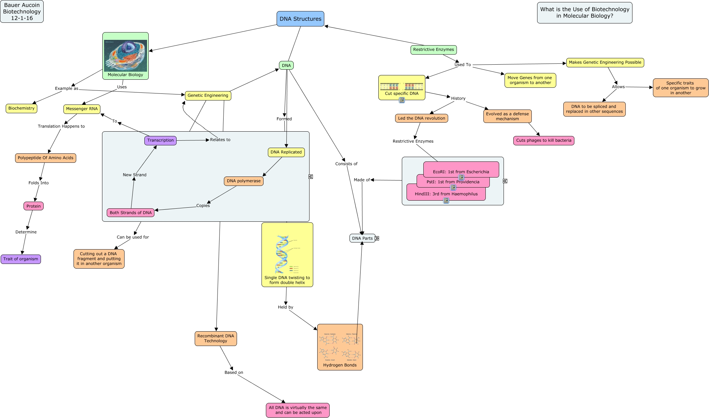

WARNING:
JavaScript is turned OFF. None of the links on this concept map will
work until it is reactivated.
If you need help turning JavaScript On, click here.
This Concept Map, created with IHMC CmapTools, has information related to: Ch.4DNAStructures, Restrictive Enzymes Used To Move Genes from one organism to another, DNA polymerase Copies Both Strands of DNA, Genetic Engineering ???? DNA, Makes Genetic Engineering Possible Allows DNA to be spliced and replaced in other sequences, Polypeptide Of Amino Acids Folds Into Protein, Restrictive Enzymes and Links Made of One of four: Adenine,Thymine, Guanine,Cytosine, Both Strands of DNA New Strand Transcription, Restrictive Enzymes Used To Cut specific DNA, DNA Replicated DNA polymerase, Transcription Relates to Genetic Engineering, DNA Structures Molecular Biology, Protein Determine Trait of organism, Cut specific DNA History Evolved as a defense mechanism, Molecular Biology Uses Messenger RNA, Makes Genetic Engineering Possible Allows Specific traits of one organism to grow in another, Single DNA twisting to form double helix Held by Hydrogen Bonds, Hydrogen Bonds ???? One of four: Adenine,Thymine, Guanine,Cytosine, Transcription To Messenger RNA, Genetic Engineering ???? Recombinant DNA Technology, Genetic Engineering Can be used for Cutting out a DNA fragment and putting it in another organism
